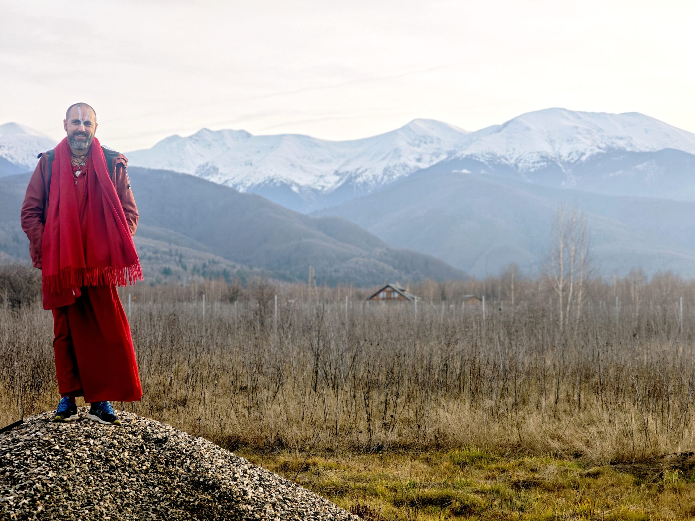
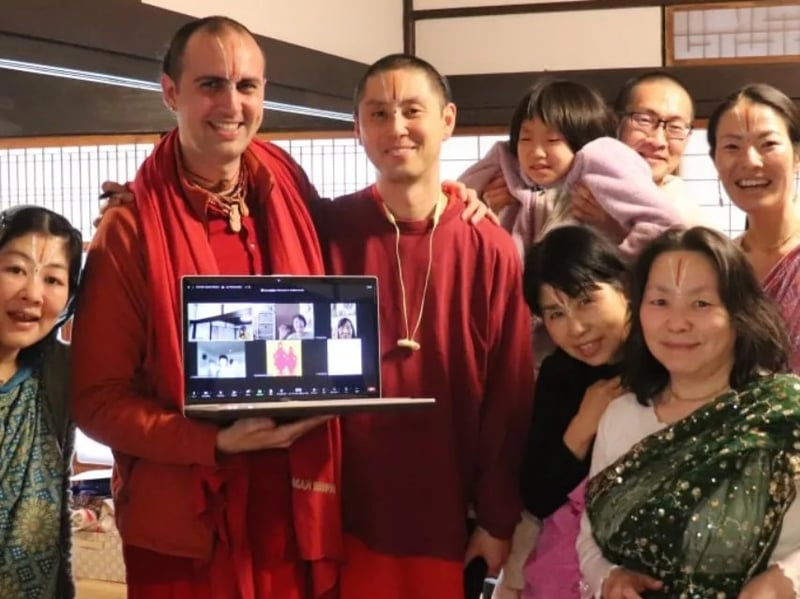
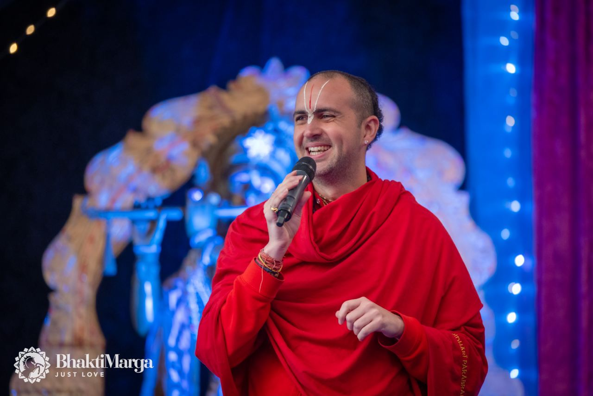
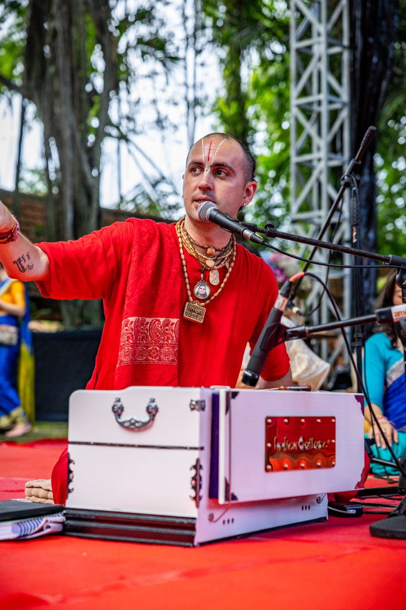

With blessings of Swami Vishwananda, Rishi Aaradhakananda started to sing Harinam as the main activity of his life.
listen hereRishi Aaradhakananda is responsible for coordinating devotional music in the global mission of Bhakti Marga. He grew up in a spiritual environment, practicing sadhana of ancient Indian traditions from an early age. In the year 2011, he encountered his spiritual master, Paramahamsa Vishwananda, and in 2015 he became a Vaishnava monk. Rishi resides in the main ashram of Bhakti Marga, Shree Peetha Nilaya, in Germany, and travels the world accompanying Guruji, primarily serving in the practice of devotional chants, kirtans, and bhajans. With a professional background in music and a jazz diploma from the Saarland University of Music, his expertise has played a crucial role in guiding Bhakti Marga to reach millions worldwide, especially through the acclaimed "Kirtan Sessions" video series, widely recognised and watched across the globe.

There's workshops and talks happening around the globe. You can find more information here.
find more here
Listen to my story and miracle experiences that I had with Paramahamsa Vishwananda.
watch here